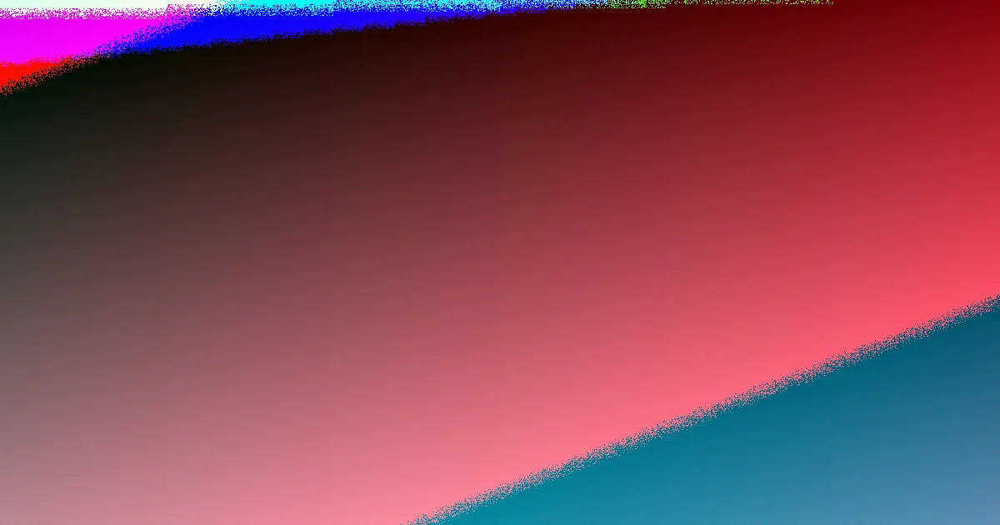

Common warning signs when engaging a Perth web design provider include vague ownership terms, quotes that skip discovery and testing, promises of guaranteed rankings, and pressure to commit before the job is defined. Sound quotes state in writing who keeps the domain, content, finished site and logins. WA small-business guidance suggests gathering three to five written quotes, and one Perth agency cites two to three months for a standard build. Knowing these web design perth red helps a local business compare quotes before signing anything.
For local buyers, web design perth red flags for Perth business owners weighing up quotes before they commit money or access
Web Design Perth Red Flags Explained
Pricing across Perth shifts with scope, how involved the design is, the amount of content work, e-commerce requirements and any custom features. That spread is expected, yet it leaves room for warning signs. A quote with no named discovery stage, no page planning and no launch checks is one flag. So is a provider who cannot say who writes and approves copy. The pattern to watch is consistency: every written quote should answer the same questions so gaps appear side by side rather than after signing. The companion Web Design Perth Beginner Guide: 2026 Guide sets out the scope decisions that should come before any comparison begins.
- A quote that omits discovery, page planning or pre-launch testing
- Content, images, hosting or maintenance left unpriced or vaguely described
- A single figure with no breakdown matched to what the job actually needs
- Pressure to commit before inputs like required pages and forms are written down
Ownership and handover gaps to question
The clearest ownership signal is a written statement that the customer keeps the domain, the content and the finished site, with logins handed over at completion. Treat any handover wording that avoids naming the owner of each asset as a warning sign. A finished site locked behind unclear access is a real risk for a small business, because routine edits, domain renewals and any future change of provider all depend on those credentials.
Related flags include hosting held in the agency's own account without explanation, training or handover support left unpriced, and no named person for final approval. Before design work begins, confirm who writes and approves page content and when design feedback is due, so approval delays cannot be used later to explain a slipped timeline.
Timelines, testing and support promises
One Perth agency is cited as describing a standard build as usually taking two to three months, covering discovery, design, development, testing and content creation. That figure is a planning reference rather than a promise, because timing also depends on site size and how quickly content and approvals arrive. A red flag is any firm offering a firm date before asking about content status, approval steps or store complexity.
Support language deserves the same scrutiny. Useful questions include what testing happens before launch, especially on phones, and what cover exists afterwards for updates, backups, security work and maintenance. Many modern sites, particularly WordPress builds, can be set up so owners edit basic text, images and pages themselves; if that matters to the business, it belongs in the quote, not in a verbal assurance.
Search and conversion claims that overreach
The source guidance notes that some Perth agencies include SEO or basic search optimisation while others do not. A quote should therefore explain technical foundations, page structure and launch checks without selling the build as a ranking guarantee, and any promise of guaranteed positions should be treated as a red flag.
Conversion fit is a separate test. The contact path should be easy to find, service pages should say who the offer suits, and store pages should build trust before checkout. For redesigns, the flag is a provider willing to replace existing content without a plan for carrying forward current search visibility.
Who should watch for these warning signs
The warnings above suit Perth SMEs, sole traders, retailers and established local businesses comparing providers for the first time or replacing an underperforming site. The useful buying question changes by business type. A service business should check whether the page structure supports fast enquiry. A professional firm should ask how copy, navigation and trust cues explain the offer. A retailer should ask how products, payments and checkout will be run after handover. The source material describes work across the Perth metro area, including the CBD, Joondalup, Fremantle, Rockingham and Mandurah, so the same checks apply whether the business sits in the inner city or the outer suburbs. Use the linked beginner guide as the starting checklist, then hold every quote against the flags above before deciding.
- Define the job on paper. Write down whether the site is mainly for enquiries, online sales, a redesign, a campaign or routine content control, since each purpose points to a different build type.
- Collect comparable written quotes. Gather three to five written quotes, consistent with WA small-business guidance, so scope differences become visible rather than hidden.
- Interrogate each inclusion. Ask whether discovery, page planning, copy support, development, testing, launch help and post-launch support are included or charged separately.
- Confirm ownership in writing. Ask who owns the domain, the content, the finished site and the logins after launch, and treat vague answers as a flag.
- Plan the handover before work starts. Decide which updates staff need to make and ask whether training or ongoing support is included.
| Warning sign | What a sound quote or answer looks like |
|---|---|
| Single price with no breakdown | Inclusions itemised so each provider prices the same job |
| Ownership not mentioned | Domain, content, finished site and logins assigned to the customer in writing |
| Guaranteed search rankings | Technical foundations, page structure and launch checks explained without ranking promises |
| Fixed deadline before scoping | Timing tied to site size, content readiness and approval steps |
| No testing or support detail | Phone testing named, plus cover for updates, backups, security and maintenance |
Common questions
Is the lowest quote automatically a red flag? No. Costs vary with scope, design complexity, content, e-commerce and custom features, so prices will differ. The flag appears when inclusions are not comparable, such as one quote excluding content or hosting and another including it. Matching the inputs first makes the comparison honest.
Should a Perth web design quote promise search rankings? No. Some agencies include SEO or basic search optimisation, but it is not always part of a standard build. A sound quote explains technical foundations, page structure and launch checks without presenting the build itself as a guarantee of positions.
What is the single most important ownership question? Ask, in writing, who keeps the domain, the content, the finished site and the logins after launch. The source guidance states customers keep those assets and that logins are handed over, so any provider unwilling to confirm that arrangement should be treated with caution.
An independent guide for Perth business owners comparing website design quotes; it is general information, not legal, financial or procurement advice.